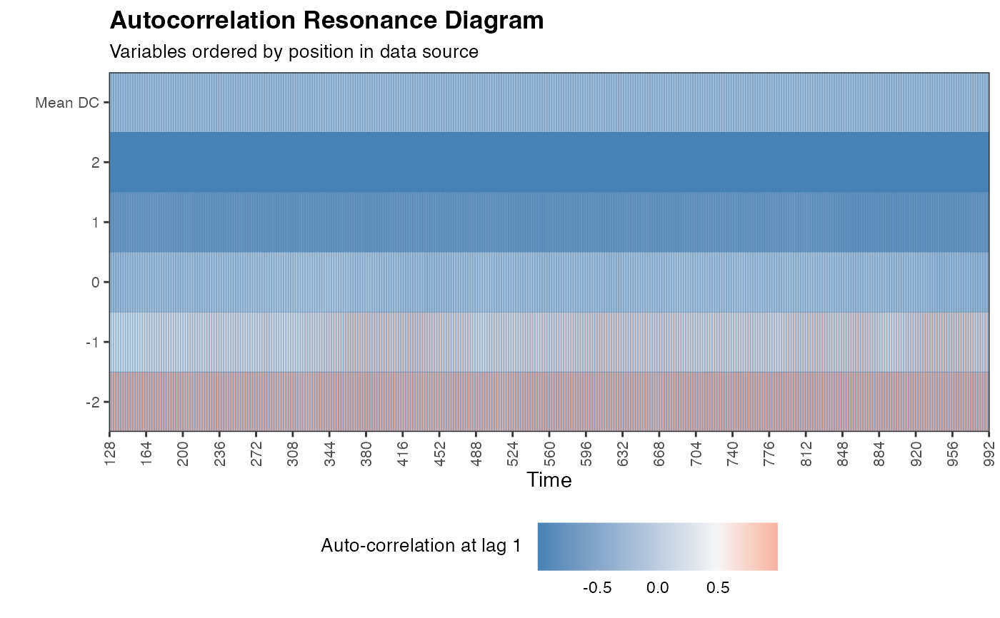

Calculate the autocorrelation function in a right-aligned sliding window on (multivariate) time series data.
ac_win( df, win = NROW(df), doPlot = FALSE, useVarNames = TRUE, colOrder = TRUE, useTimeVector = NA, timeStamp = "01-01-1999" )
| df | A data frame containing multivariate time series data from 1 person. Rows should indicate time, columns should indicate the time series variables. All time series in |
|---|---|
| win | Size of window in which to calculate Dynamic Complexity. If |
| doPlot | If |
| useVarNames | Use the column names of |
| colOrder | If |
| useTimeVector | Parameter used for plotting. A vector of length |
| timeStamp | If |
Data frame with autocorrelations in requested window size.
For different step-sizes or window alignments see ts_windower().
data(ColouredNoise) ac_win(elascer(ColouredNoise[,c(1,11,21,31,41)],groupwise = TRUE), win = 128, doPlot = TRUE)#> Warning: Removed 795 rows containing missing values (geom_raster).#> Warning: Removed 31 rows containing missing values (geom_vline).